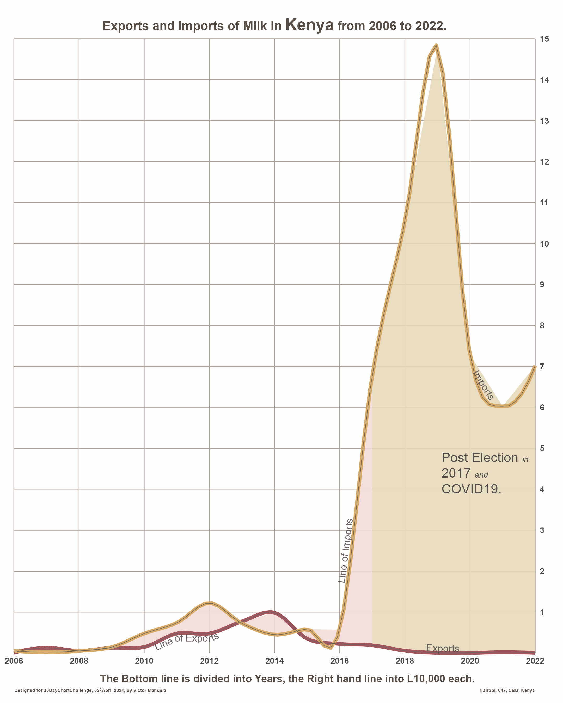

Election periods cause tension and affect agricultural production, in 2017 it led to a sharp decrease in Milk supply and caused an import rise of the commodity for a period.

However, during the outbreak of covid19 Kenya experienced import restrictions causing a slight decrease.
Source of Data is FAOSTATS
Hear is a simple step-wise analysis of generating the code:-
library(tidyverse)
library(here)
library(ggtext)
# remotes::install_github("AllanCameron/geomtextpath")
library(geomtextpath)
library(camcorder)
gg_record(dir = here::here("2024/02"), device = "png", width = 1080 * 2, height = 1350 * 2, units = "px", dpi = 320)
# source: https://www.fao.org/faostat/en/#data/TCL
# width to height
aspect_ratio <- 1280 / 946
df <- read_csv("2024/data/kenya_milk_trade_2006-2022.csv") %>%
select(year = Year,
Element, Value) %>%
pivot_wider(names_from = "Element",
values_from = "Value") %>% #, names_to = c("Export", "Import")
rename(imports = "Import Quantity",
exports = "Export Quantity") %>%
mutate(imports = round(imports,0)/10000,
exports = round(exports, 0)/10000)
# apply lowess smoothing to the import / export data
smooth_bw <- 0.17
apply_smoothing <- function(x, y, bw) {
smooth <- lowess(x, y, f = smooth_bw)
smooth$y
}
df$imports_smooth <- apply_smoothing(df$year, df$imports, bw = smooth_bw)
df$exports_smooth <- apply_smoothing(df$year, df$exports, bw = smooth_bw)
base_font_family <- "Abhaya Libre"
line_color <- "#ABA098"
font_color <- "#564D46" # "#45403E"
axis_labels_y <- as.character(seq(1, 15 , 1))
axis_labels_y[axis_labels_y == "100"] <- "100,000"
geom_textline2 <- function(..., stat = "unique", linecolor = NA,
color = "#554C49", family = base_font_family,
fontface = "bold", size = 3) {
geom_textline(...,
stat = stat, linecolor = linecolor, color = color, alpha = 0.87,
family = family, size = size)
}
# png(here(base_path, "03-historical.png"), res = 300, units = "in",
# width = 6, height = 6 / aspect_ratio)
p <- df %>%
ggplot2::ggplot(aes(year)) +
geom_hline(yintercept = 100, size = 1, col = "#ABA098") +
# Highlighted area
geom_ribbon(
data = . %>% filter(year <= 2017),
aes(x = year, ymin = exports_smooth, ymax = imports_smooth),
fill = "#F2DBD8", alpha = 0.9) +
geom_ribbon(
data = . %>% filter(year >= 2017),
aes(x = year, ymin = exports_smooth, ymax = imports_smooth),
fill = "#E5D9B9", alpha = 0.9) +
# smoothed lines (thick coloured lines + thin grey lines)
geom_smooth(aes(y = exports),
size = 1.5, se = FALSE, span = 0.25, alpha = 0.8,
col = "#A3555B", method = "loess") +
geom_smooth(aes(y = imports),
size = 1.5, se = FALSE, span = 0.25, alpha = 0.8,
col = "#D8A962", method = "loess") +
geom_smooth(aes(y = exports),
size = 0.2, se = FALSE, span = 0.28, alpha = 0.2,
col = "grey40", method = "loess") +
geom_smooth(aes(y = imports),
size = 0.2, se = FALSE, span = 0.28, alpha = 0.2,
col = "grey40", method = "loess") +
# Annotations
geom_textline2(aes(y = imports, label = "Line of Imports"),
vjust = 0, hjust = 0.3) +
geom_textline2(aes(y = exports, label = "Line of Exports"),
vjust = 1, hjust = 0.3) +
geom_textline2(aes(y = imports, label = "Imports"),
vjust = 1, hjust = 0.95) +
geom_textline2(aes(y = exports, label = "Exports"),
vjust = 0, hjust = 0.85) +
# geom_textline2(aes(y = exports, label = "BALANCE AGAINST"),
# vjust = -1.5, hjust = 0.38, size = 3.5,
# family = "Taviraj Bold Italic",
# # family = "Old Standard TT", fontface = "bold"
# ) +
annotate("richtext", x = 2019, y = 5,
label = "Post Election</span>
<i style='font-family: Taviraj Italic; font-size: 7pt'>in</i> <br>
2017
<i style='font-family: Taviraj Italic; font-size: 7pt'>and</i> <br>
COVID19.",
size = 4, family = "Taviraj Bold Italic",
hjust = 0, vjust = 1, color = "#554C49", label.size = 0, fill = NA) +
scale_x_continuous(breaks = seq(2006, 2022, 2)) +
scale_y_continuous(position = "right", breaks = seq(1, 15, 1),
labels = axis_labels_y) +
coord_cartesian(ylim = c(0, 15), expand = FALSE, clip = "off") +
labs(
title = "Exports and Imports of Milk in
<span style='font-size: 14pt'>Kenya</span> from 2006 to 2022.",
caption = paste("The Bottom line is divided into Years,
the Right hand line into L10,000 each.",
"<br><span style='font-size:4pt'>Designed for 30DayChartChallenge, 02<sup>t</sup> April 2024, by Victor Mandela",
"<span style='color:transparent'>",
paste(rep(".", 200), collapse = ""),
"</span>",
"Nairobi, 047, CBD, Kenya</span>")) +
theme_minimal(base_family = base_font_family, base_size = 9) +
theme(
plot.background = element_rect(color = NA, fill = "#FEFEFF"),
axis.title = element_blank(),
axis.text = element_text(face = "bold"),
panel.grid.major = element_line(color = line_color, size = 0.3),
panel.grid.minor = element_blank(),
text = element_text(color = font_color),
plot.title = element_markdown(face = "bold", hjust = 0.5),
plot.caption = element_markdown(hjust = 0.6, size = 9, lineheight = 0.8,
family = "Charm", face = "bold",
margin = margin(t = 8)),
plot.margin = margin(t = 16, b = 8, l = 12, r = 12))
p
invisible(dev.off())
# Add the border around the plot area - fair play to William Playfair
library(grid)
png(here(base_path, "03-historical-wframe.png"), res = 300, units = "in",
width = 6, height = 6 / aspect_ratio)
p + annotation_custom(
rectGrob(gp = gpar(col = "#4B4543", fill = NA, lwd = 3)),
xmin = 1699.5, xmax = 1787, ymin = -2, ymax = 202
) + annotation_custom(
rectGrob(gp = gpar(col = "#4B4543", fill = NA, lwd = 0.5)),
xmin = 1700, xmax = 1786.5, ymin = 0, ymax = 200
)
Credit to Ansgar Wolsing.